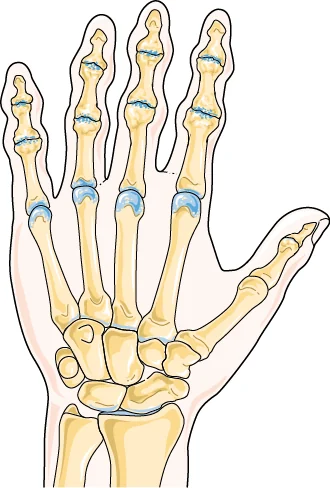

È l'artrosi dell'articolazione fra il primo osso del pollice e il trapezio, al polso. Il pollice partecipa a quasi ogni presa, e questo spiega perché una sola articolazione possa condizionare tanto la giornata: girare una chiave, aprire un barattolo, strizzare.
È molto frequente dopo i cinquant'anni, soprattutto nelle donne. Sul trattamento conservativo le prove ci sono, e nell'ultimo decennio sono diventate più sfumate di quanto si pensasse.

Come si manifesta
- Dolore alla base del pollice, sul versante del polso, nel punto in cui il pollice si innesta sulla mano.
- Si accende nei gesti di pinza e di torsione: chiavi, barattoli, bottoni, strizzare un panno.
- Perdita di forza nella pinza, con oggetti che sfuggono.
- Con il tempo, la base del pollice può apparire più sporgente e il pollice fatica ad allontanarsi dal palmo.
- Nelle fasi iniziali il dolore compare solo sotto sforzo; più avanti anche a riposo.
Nella stessa zona dà dolore anche la sindrome di De Quervain, e le due si confondono: là il dolore è qualche centimetro più in alto e si accende piegando il polso verso il mignolo.
Quando preoccuparsi
Contatta il medico presto se
- compare formicolio alle dita, che non fa parte di questo quadro;
- l'articolazione è gonfia, calda e arrossata;
- il dolore è iniziato dopo un trauma;
- la forza della mano sta calando rapidamente.
Cosa puoi fare tu
Fai
- Impara a scaricare il pollice: usa il palmo e tutte le dita al posto della pinza ogni volta che puoi.
- Procurati gli ausili che tolgono forza al gesto: apribarattoli, impugnature larghe, chiavi con presa maggiorata.
- Fai gli esercizi per la mano che ti vengono indicati, e falli con continuità.
- Per la terapia farmacologica chiedi al medico.
Non fare
- Non immobilizzare il pollice tutto il giorno di tua iniziativa.
- Non rinunciare alle attività: conviene cambiare il modo di farle.
Servono esami?
La diagnosi è clinica. La radiografia mostra lo stato dell'articolazione ed è utile quando si valuta un intervento, ma il grado radiografico e il dolore non vanno di pari passo: ci sono articolazioni molto consumate che fanno poco male, e il contrario. È il medico specialista che valuta sulla base della visita se e quando serva.
Le cure, e quanto funzionano
Quello che le raccomandazioni europee indicano[1]
- Educazione, ergonomia, gestione del ritmo delle attività e ausili.
- Esercizi per funzione, forza e dolore.
- Tutore per la base del pollice, indicato anche per un uso prolungato nel tempo.
- Antinfiammatori topici come prima scelta fra i farmaci; analgesici orali per periodi limitati.
- Chirurgia quando il dolore resiste: per la base del pollice la tecnica citata è la trapeziectomia.
Che cosa ha aggiunto la ricerca successiva
Una revisione sistematica del 2020 ha trovato prove di qualità da bassa a moderata a favore di alcuni interventi in particolare: il tutore termoplastico su misura rispetto al non fare nulla, la mobilizzazione del nervo radiale, e la combinazione di esercizi per la mano con la mobilizzazione articolare e nervosa.[2]
Lo studio più ampio, però, invita a una lettura più prudente. Trecentoquarantanove persone in diciassette centri ospedalieri britannici sono state assegnate a tre gruppi: un programma di autogestione guidato da un terapista, lo stesso programma più un tutore vero, oppure lo stesso programma più un tutore inefficace usato come confronto. Tutti e tre i gruppi sono migliorati, senza differenze fra loro nel dolore a otto settimane.[3]
Letti insieme, questi dati non dicono che il tutore sia inutile: dicono che il tutore da solo non è la cura, e che il programma di autogestione — capire la condizione, cambiare i gesti, fare gli esercizi — è la parte che porta il risultato. Il tutore ha senso dentro quel programma, e per alcune persone fa comodo in momenti precisi della giornata.
Quando serve lo specialista
Per confermare che il dolore venga da quell'articolazione e non da una delle condizioni vicine, per impostare il programma di autogestione e gli esercizi, e per scegliere il tutore giusto se serve.
E, quando il dolore condiziona le attività della vita quotidiana nonostante il trattamento, per discutere, numeri alla mano, quale trattamento sia più idoneo per la tua situazione.
Da dove vengono queste informazioni
- Kloppenburg M, Kroon FPB, Blanco FJ, et al. 2018 update of the EULAR recommendations for the management of hand osteoarthritis. Ann Rheum Dis 2019;78(1):16–24. doi:10.1136/annrheumdis-2018-213826. Cinque principi generali e dieci raccomandazioni.
- Hamasaki T, Laprise S, Harris PG, Bureau NJ, Gaudreault N, Ziegler D, Choinière M. Efficacy of nonsurgical interventions for trapeziometacarpal (thumb base) osteoarthritis: a systematic review. Arthritis Care Res (Hoboken) 2020;72(12):1719–1735. doi:10.1002/acr.24084. Diciassette revisioni sistematiche, 34 studi randomizzati.
- Adams J, Barratt P, Rombach I, et al. The clinical and cost effectiveness of splints for thumb base osteoarthritis: a randomized controlled clinical trial. Rheumatology (Oxford) 2021;60(6):2862–2877. doi:10.1093/rheumatology/keaa726. Trecentoquarantanove partecipanti in diciassette centri del servizio sanitario britannico.
Scheda aggiornata il 6 novembre 2026. Prossima revisione prevista entro novembre 2028.